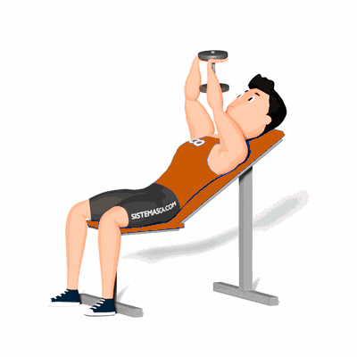

Pull Over Inclinado

Exercício para fortalecimento e hipertrofia da região peitoral e dorsal, com enfoque nos peitorais. Estimula também, os músculos auxiliares, tais como: tríceps e deltoides. Indicado a praticante de musculação nível intermediário e avançado.
Ficha Técnica
Tipo: Musculação
Grupo Muscular: Peito
Aparelho: Nenhum
Músculos: Nenhum
Como realizar
- Pegue um halter, palmas das mãos voltas para cima, sente em um banco inclinado;
- Escápulas e glúteos bem estabilizados ao banco;
- Suspenda a barra na linha do peitoral, cotovelos semiflexionados e ligeiramente estendidos;
- Sem movimentar os cotovelos, desça a barra até atingir a linha de trás da cabeça, fazendo um movimento de arco com os braços;
- Retorne à posição inicial realizando a contração dos músculos do peitoral;
- Repita o movimento pelo número de repetições orientado pelo o professor.
 RC STORE
RC STORE